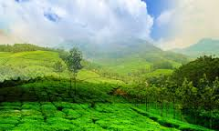

About Tamilnadu
Located in the Southern region of India, Tamil Nadu is nestled around Indian Ocean in the South, Eastern Ghats in the north, Kerala, Anamalai and Nilgiri on the West and Bay of Bengal in the East. It is known as the 'land of rich cultural heritage.' Lauded for being one of the continuously inhabited regions in India, the main attractions of Tamil Nadu include historical monuments, 1000 km sun-kissed beaches, adventurous wildlife and bird sactuaries, rythmic cascading waterfalls and pageantry of festive days. With the myriad options of travel and experience, Tamil Nadu is definitely one of the rewarding tours to indulge in.
Read MoreDESTINATIONS

HILL STATIONS
Top Attractions
Chennai
Formerly known by the name Madras, Chennai is the Capital City of Tamil Nadu. Chennai is 3rd most visited City by tourists after Delhi and Mumbai.
Book Now!!Mahabalipuram
Also known as Mamallapuram, the city of Mahabalipuram is famous for its ancient and cultural heritage.
Book Now!!Kanyakumari
The southernmost tip of mainland India, Kanyakumari was formerly known by the name Cape Comorin and famous for its ancient and cultural heritage.
Book Now!!TRAVEL INFORMATION
Our Location More like our favourite surf spot
Tamil Nadu is the eleventh-largest state in India by area and the sixth-most populous. The state was ranked sixth among states in India according to the Human Development Index in 2011, with the second largest state economy. Tamil Nadu is the second largest state economy in India with 4,789 billion in gross domestic product. The state has the highest number (10.56 per cent) of business enterprises and stands second in total employment (9.97 per cent) in India, compared to the population share of about 6 per cent. Tamil Nadu was ranked as one of the top seven developed states in India based on a "Multidimensional Development Index" in a 2013 report published by a panel headed by current RBI governor Raghuram Rajan. Its official language is Tamil, which is one of the longest-surviving classical languages in the world.
Feedback For improvement
We all know how cultured and beautiful the southern part of our country is. And if there had to be one state that would describe the majesty of South India that it has to be Tamil Nadu. Adorned with diversity, this state is ideally the homeland of classical civilization that has preserved and nurtured their two millennia old culture, traditions and art in such a way that it has been set as an example for other states. Tamil Nadu breaks all the clichés and has emerged as a state that has bounty and diversity. Rolling mountains, azure seas, sandy beaches, swaying fields, high cascading waterfalls, chic hotels, uber cool lounges, lofty shopping malls, there is infact nothing that this state lacks and therefore it is a must visit in India. Here is a list of some of the best places to visit in Tamil Nadu that will definitely open eye to a different and classic India.
Feedback!
Destinations
Tamil Nadu is a state in the south-eastern part of the Indian Peninsula. One of the four Dravidian states of India, it has had more than 4,000 years of continuous cultural history. Tamil Nadu has some of the most remarkable temple architecture in the country, and a living tradition of music, dance, folk arts and fine arts.